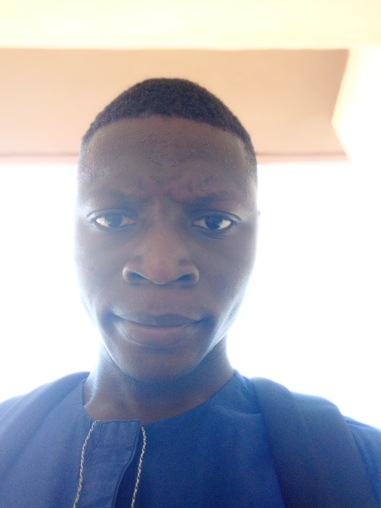

BIO
My name is Laniran JohnPaul. I'm a front-end web developer and on-page SEO. During my free time, i find challenges to solve, convert PSD and figma design to codes and take soft skills training. I love music (i used to play the keyboard), cooking, football and dogs.
May 2021 - July 2021
Side Hustle Internship
Intern
- Assisting other interns and people with little or no programming/coding experience get started and speed up their learning.
- Active participation and communication with team members and coordinators in all activities to ensure proper result of given tasks.
September 2020 - April 2021
Nigerian Institute of Medical Research
Undergradute Intern
- Assisting in the research of malaria vaccine, cancer treatment and current ongoing covid-19 vaccine project.
- Study and Diagnosis of common malaria parasites, diabetes and polymerase chain reaction for amplification of various DNA.
- Carried out tests for detecting blood group and blood genotypes.
June 2019- September 2019
Syndram Global Services Limited
Sales Representative
- Overseeing of the company’s affairs, ensuring that the company runs smoothly with not less than 98% satisfaction rating from customers.
- The managing of all sectors of the company, making sure that all sectors of the company are 100% efficient in their various aspects and ensuring that the books are balanced weekly and monthly.
- Relating with both workers and customers to resolve various issues or any complaints.
- Creating a bond with workers for better work flow which in turn leads to better productivity.
March 2015- October 2018
Jovilan Ventures
Computer Enginerr
- Diagnosing and repairing all types of computers and tech related devices.
- Making sure the computers are well prepared for use to installing the necessary applications and software.